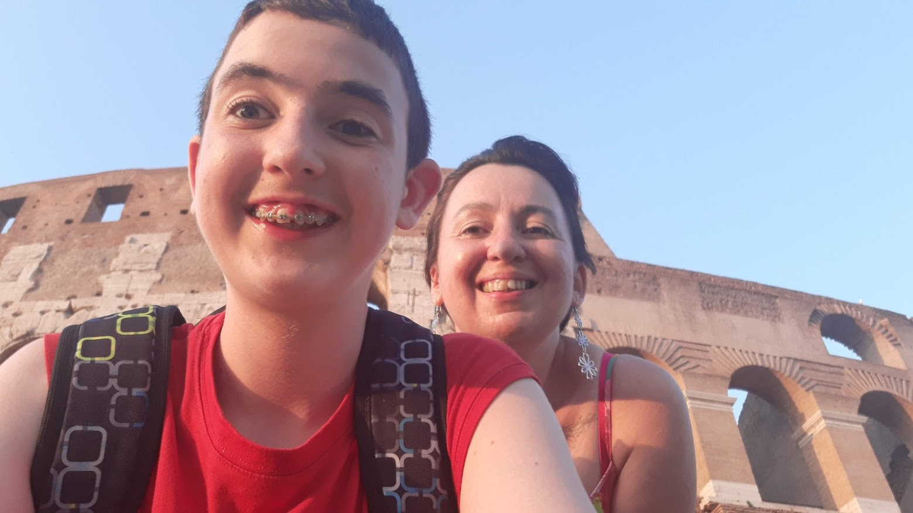

A nevem Benjámin.
Mióta világom élem, azóta érdekel az egésze. Szerencsésnek
mondhatom magam, mert mára már életem szerves részévé vált a rendszeres barangolás.
Egészen sokáig, 5 évvel ezelőttig csak igen ritkán, 4-5 évente jártunk külföldre, általában
Horvátországba nyaralni. Azonban 2018-ban ez megváltozott: ekkor eldöntötte édesanyám, ha törik
ha szakad, mi márpedig évente legalább egyszer elmegyünk nyaralni. Ez a teljesítmény egészen
2022-ig volt tartható, azóta viszont ugyan egyedül, de az évi egy alkalom helyett minden
párhavonta útrakelek.
Családom és ismerősök révén ma már számos gyönyörű európai helyszínt és
túrát megjártam, ugyanakkor még sok hátra van, és a kontinensen kívül még nem is jártam.
Ezen oldal célja, hogy az előző évek alatt gyűjtött tapasztalaimból meg tudjak osztani pár tippet és
tanácsot leendő világjegyeseknek.
Jelen terveim része Amerika és a távol-kelet meglátogatása, ennek fő indoka pedig, hogy magyar-
koreai barátaim minden évben visszajárnak hazájukba, és egyszer szeretnék velük tartani. Ha pedig
minden jól megy, akkor jövő tavasszal kiköltözök külföldre, hogy hosszabb távon is
megismerkedjek egy új kultúrával.
